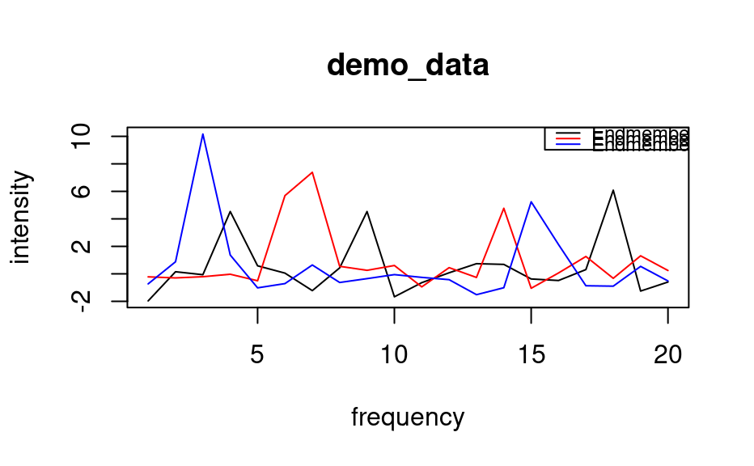

A simulated data set of 10 samples, each measured at 20 frequencies.
Usage
data(demo_data)Examples
data(demo_data)
# plot the (nearly pure) endmembers
matplot(t(demo_data[c(3, 7, 9),]), type = "l",
col = c("black", "red", "blue"), lty = 1,
xlab = "frequency", ylab = "intensity",
main = "demo_data")
leg.txt <- c("Endmember 1", "Endmember 2", "Endmember 3")
legend("topright", leg.txt, col = c("black", "red", "blue"),
cex = 0.75, lty = 1)

if (FALSE) {
# demo_data was created as follows
set.seed(123)
n <- 10 # no. of samples
p <- 20 # no. of frequencies
## endmembers / pure spectra / endmember matrix
em1 <- c(0, 0, 0, 5, 0, 0, 0, 0, 3, 0, 0, 0, 0, 0, 0, 0, 0, 6, 0, 0)
em2 <- c(0, 0, 0, 0, 0, 8, 7, 0, 0, 0, 0, 0, 0, 4, 0, 0, 0, 0, 0, 0)
em3 <- c(0, 0, 8, 0, 0, 0, 0, 0, 0, 0, 0, 0, 0, 0, 2, 0, 0, 0, 0, 0)
eM <- matrix(c(em1, em2, em3), byrow = TRUE, ncol = 20)
## weights matrix
wM <- matrix(runif(30), nrow = n)
# set certain samples (weights) to pure endmembers
wM[3, c(2, 3)] <- 0 # em1
wM[7, c(1, 3)] <- 0 # em2
wM[9, c(1, 2)] <- 0 # em3
wM <- wM/rowSums(wM) # normalize weights matrix
## data matrix (weighted averages)
dM <- wM %*% eM
## add in some noise
demo_data <- dM + matrix(rnorm(n*p), nrow = n)
}